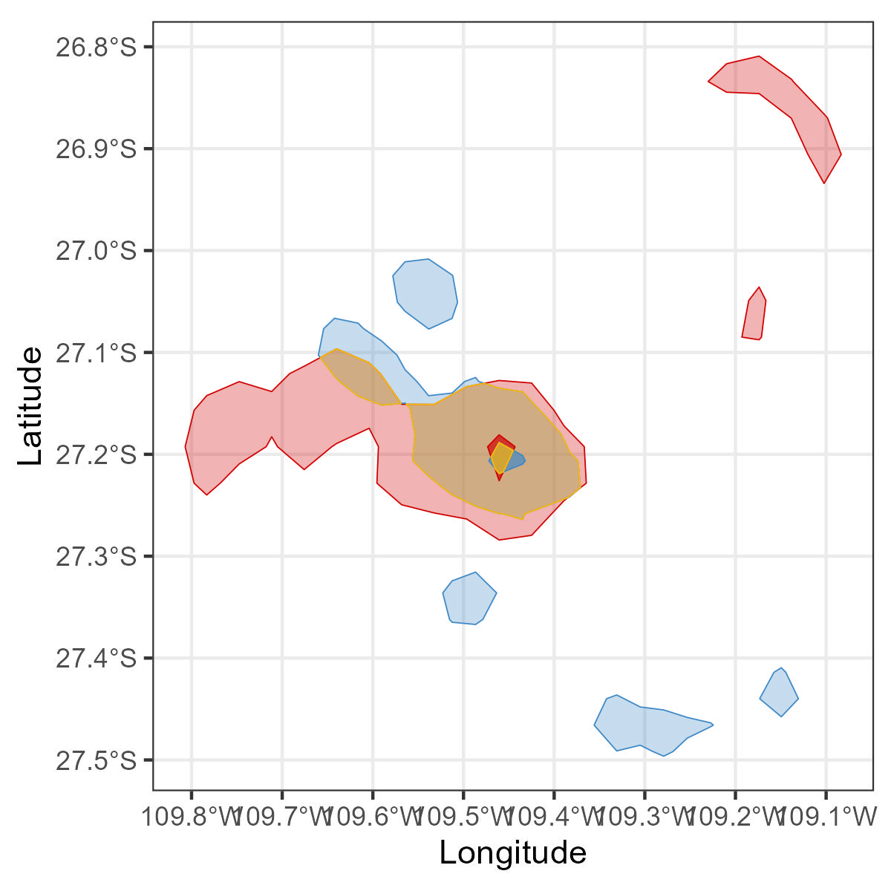

#devtools::install_github("MiriamLL/sula")
library(sula)Shared Areas
R
English
Y2022
biologging
Calculate area per polygon, their intersection and the shared areas.
Intro
Here, some steps for:
Generating kernel polygons
Calculating the intersection between two polygons
Plotting polygons and their intersection
Creating a table with the shared areas between two polygons
Data
To replicate the exercise, load data from the package ‘sula’. For accessing the data, you need to have the package installed.
The data is from 10 tracked individuals.
GPS_raw<-(GPS_raw)Create polygons
Select which individuals you want to compare
GPS01<-subset(GPS_raw,GPS_raw$IDs=='GPS01')
GPS02<-subset(GPS_raw,GPS_raw$IDs=='GPS02')With the following function you can create the polygon of the individual using an specific value.
Your need to provide the name of the column that contains the latitude, the name of the column that contains the longitude, and the value you want to calculate (E.g. core=50, general=95).
create_polygon<-function(Data=Data, lon_col=lon_col,lat_col=lat_col,value=value){
Data<-Data
Data$Longitude<-Data[[lon_col]]
Data$Latitude<-Data[[lat_col]]
#convert to spatial
DataSp<-as.data.frame(Data)
sp::coordinates(DataSp) <- c("Longitude", "Latitude")
sp::proj4string(DataSp) <- sp::CRS("+init=epsg:4326")
#create polygon
DataSp<-adehabitatHR::kernelUD(DataSp,h="href") # Using reference
Data_50<-adehabitatHR::getverticeshr(DataSp,percent=value)
Data_sf_50<-sf::st_as_sf(Data_50)
return(Data_sf_50)
}Calculate polygons of 50%.
Some warnings may appear
GPS01_50<-create_polygon(Data=GPS01,lat_col="Latitude",lon_col="Longitude",value=50)
GPS02_50<-create_polygon(Data=GPS02,lat_col="Latitude",lon_col="Longitude",value=50)Calculate polygons of 95%.
GPS01_95<-create_polygon(Data=GPS01,lat_col="Latitude",lon_col="Longitude",value=95)
GPS02_95<-create_polygon(Data=GPS02,lat_col="Latitude",lon_col="Longitude",value=95)Compare
With the function intersection of the package sf you can obtain the area where both polygons intersect
library(sf){kind=link}
sf_use_s2(FALSE)Intersection_95<-sf::st_intersection(st_as_sf(GPS01_95),
st_as_sf(GPS02_95))
Intersection_50<-sf::st_intersection(st_as_sf(GPS01_50),
st_as_sf(GPS02_50))Plot
Using the following function plot_overlaps and the package ggplot, you can visualize where the intersection is occurring
library(ggplot2)plot_overlaps<-function(ID1_95=ID1_95,ID1_50=ID1_50,ID2_95=ID2_95,ID2_50=ID2_50){
Plot<-ggplot2::ggplot()+
ggplot2::geom_sf(data = ID1_95,color='#d00000',fill = "#d00000",alpha=0.3,size=1)+
ggplot2::geom_sf(data = ID2_95,color='#3f88c5',fill = "#3f88c5",alpha=0.3,size=1)+
ggplot2::geom_sf(data = Intersection_95, color='#ffba08', fill = "#ffba08",alpha=0.3,size=1)+
ggplot2::geom_sf(data = ID1_50,color='#d00000',fill = "#d00000",alpha=0.7,size=1)+
ggplot2::geom_sf(data = ID2_50,color='#3f88c5', fill = "#3f88c5",alpha=0.7,size=1)+
ggplot2::geom_sf(data = Intersection_50, color='#ffba08', fill = "#ffba08",alpha=0.7,size=1)+
ggplot2::labs(x = "Longitude", y="Latitude")+
theme_bw()
return(Plot)
}It would show a map with your polygons
overlap_plot<-plot_overlaps(ID1_95=GPS01_95,
ID1_50=GPS01_50,
ID2_95=GPS02_95,
ID2_50=GPS02_50)
overlap_plot
Create table
Once you have your polygons for each individual and also the intersection between polygons, you can now create a table using the following custom function table_areas
To calculate the shared area, the function follows the formula as in Hedd et al. 2014 and McFarlane Tranquila et al. 2013
table_areas<-function(ID1_50=ID1_50,
ID2_50=ID2_50,
ID1_95=ID1_95,
ID2_95=ID2_95,
Intersection_50=Intersection_50,
Intersection_95=Intersection_95){
Tabla<-data.frame(
UDs=c("50","95"),
ID1_area_km2=c(
round(as.numeric(units::set_units(st_area(ID1_50),km^2)),2),
round(as.numeric(units::set_units(st_area(ID1_95),km^2),2))
),
ID2_area_km2=c(
round(as.numeric(units::set_units(st_area(ID2_50),km^2),2)),
round(as.numeric(units::set_units(st_area(ID2_95),km^2),2))
),
intersection_area_km2=c(
round(as.numeric(units::set_units(st_area(Intersection_50),km^2),2)),
round(as.numeric(units::set_units(st_area(Intersection_95),km^2),2))
)
)
Tabla$shared_area_percent<-
(Tabla$intersection_area_km2)/
(
(Tabla$ID1_area_km2 - Tabla$intersection_area_km2) +
(Tabla$ID2_area_km2 - Tabla$intersection_area_km2) +
Tabla$intersection_area_km2)
return(Tabla)
}The table contains the area of each polygon, the intersection and the shared areas
areas_table<-table_areas(ID1_50=GPS01_50,
ID2_50=GPS02_50,
ID1_95=GPS01_95,
ID2_95=GPS02_95,
Intersection_50=Intersection_50,
Intersection_95=Intersection_95)areas_table$shared_area_percent<-round(areas_table$shared_area_percent*100,2)It should return a table as the following:
Export
To export the table as csv:
write_csv(areas_table,'areas_table.csv')To export the polygons as shapefiles:
st_write(GPS01_50, "GPS01_50.shp")
st_write(GPS02_50, "GPS02_95.shp")
st_write(Intersection_50, "Intersection_50.shp")
st_write(GPS01_95, "GPS01_95.shp")
st_write(GPS02_95, "GPS02_95.shp")
st_write(Intersection_95, "Intersection_95.shp")Recommended literature
- Geocomputation in R
- Shared areas formula by Hedd et al. 2018 and McFarlane Tranquila et al. 2013